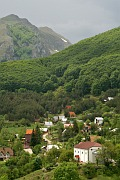

Disclaimer: These pages are not actively maintained, and some of the practical information on the site is out of date. I am working on a new version of the site that will focus more on my photos and memories of travel in Southeast Europe, and less on practical details that too easily become obsolete. In the meantime, please treat the information here with caution.
Lake Ohrid and the mountains of Albania
Ohrid Town, from Velestovo
Lake Ohrid
The Lake Ohrid region is one of the most enticing destinations in the Balkans. There are dozens of things to do and places to see, museums to visit, churches to admire, castles to explore, and mountains to climb. But don't be surprised if you find yourself submitting to the mesmeric charm of the lake glistening in its bowl of mountains, and spending a few days doing nothing much at all.
Not many foreign tourists visit Macedonia, but those who do make their way here almost always visit Ohrid, and with good reason. The majority of visitors still come from Macedonia itself or from neighbouring countries. The shore of Ohrid is Macedonia's equivalent of the Croatian Adriatic, at its busiest in July and August - so don't come expecting an unspoilt paradise. Ohrid may have a distinguished history, but its main business today is tourism, and like any resort town it has its quota of large hotels and souvenir hawkers, and even a McDonald's stall. Outside high season Ohrid is still an amazingly tranquil place.
Tsar Samoil Fortress
National Museum (Robev House)
Ohrid Quay
Church of Sv Jovan, Kaneo
Ohrid Town
Curving around a small bay at the northeastern corner of the lake, Ohrid is the largest town in the region. People have lived here since ancient times, taking advantage of the protection provided by the hill overlooking the bay. In the Byzantine era the missionary saints Clement and Naum settled in Ohrid and the town became a centre of monasticism and learning, its influence spreading throughout the Slavic Orthodox world. At times the Archbishopric of Ohrid stretched as far as the Adriatic and the Aegean.
The houses of Ohrid's old town are artistically arranged on the hillside. In Ottoman times Christians were confined to this area within the city wall, and the need to make the best use of the available space inspired some creative architectural responses. Two good examples of houses built by wealthy families are the Robev and Uranija Houses, now occupied by the National Museum.
Ohrid is said to have more than forty churches or remains of churches. One of the most impressive is the former cathedral of Sveta Sofia, which has a far more spacious feeling than most of the other churches, and some very well preserved frescoes. Higher up the hill is the snappily named Sveti Kliment Bogorodica Perivlepta (St Clement's Church of the Holy Mother of God Most Glorious). In contrast to earlier anonymous frescoes, those at Sveti Kliment are known to have been painted by the innovative artists Mihajlo and Eutihije. The complex also includes a gallery of icons.
St Clement's monastery was located at Plaošnik, on the wooded slopes below Tsar Samoil's fortress. From a distance the large church of Sv Kliment i Pantelejmon looks like a typical mediaeval Macedonian construction, but on closer inspection it becomes obvious that it is a modern structure - it was consecrated in 2002. Beside it are some remains of an early Christian basilica. A footpath from Plaošnik leads downhill to Kaneo, where the Church of St John perches on a promontory. There's not much to see inside the church, but few visitors to Ohrid can resist taking multiple photographs of the Armenian-influenced exterior with the lake in the background.
Tsar Samoil's fortress is visible from just about everywhere in Ohrid, and even in the hottest weather most people drag themselves up the hill to have a look. There is not much to see inside, but it is possible to walk most of the way around the battlements. The pathways have been protected with sturdy railings - an unusually safety-conscious development for a ruin in the Balkans. Not surprisingly the views are wonderful, taking in the rooftops of Ohrid, the complete oval of the lake, the slopes of Galičica, and the mountains of Albania (snowcapped for much of the year). Footpaths leading west from the fortress pass through refreshingly shaded pine woods and down to the sheltered Labino Beach.
The modern part of Ohrid has little of specific interest other than the lake shore. In the evenings locals and and tourists alike follow the path south along the shore. Rollerbladers weave their way past flocks of sheep as they pass the yacht club and the spick-and-span Army beach at Biljana, following the path as far as Tito's old villa, inevitably in a prime location overlooking the lake, and still out of bounds for non-VIPs.
North from Ohrid: Struga and Vevčani
Struga
Vevčani
Sv Nikola Church, Vevčani

Gorna Belica
If you find yourself overdosing on history and culture in Ohrid, make the short journey to Struga on the northern shore of the lake. Smaller and flatter than Ohrid, Struga also has a long history, but the town is now almost entirely modern. You are therefore free of the obligation to do anything more than relax on the beach, stroll beside the clear waters of the Crni Drim river, or join the locals whiling away the afternoon in one of the town's abundant cafes.
Behind the House of Culture is a park filled with trees planted by poets from around the world. Struga's poetry festival, held annually in August, was inspired by the Miladinov Brothers who lived in the town. One of them wrote the poem "T'ga na Jug", "Longing for the South", while living among the frosts and blizzards of the Russian plains. Not surprisingly he missed his home in the mountains of the South, where "the sunrise warms the soul, the sunset glows on wooded heights".
A short distance further west along the shore, near the villages of Kališta and Radožda, a number of cave churches are built into the cliffs.
Northwest of Struga, in the foothills of the Jablanica mountains, are several interesting villages including Gorna Belica, Oktisi, and Vevčani. The last-named apparently voted to declare itself independent in 1991 and is sometimes referred to as the "Republic of Vevčani". It's pretty small for a republic (even a republic in the Balkans), but rather large for a village, and appears to be a lively and prosperous place. A park has been created around the springs just outside the village, and places of interest are even signposted in English. The Sveti Nikola Church is well worth a look inside. You're quite likely to come across some of the older residents in traditional dress outside their impressive stone houses. The rather Alpine-looking settlement of Gorna Belica, uphill from Vevčani, has fine views of the high mountains and back down to Lake Ohrid. Most of the houses are modern, but there is a 19th century Vlach church, Sveti Petka. Just outside the village an information board outlines the "Via Egnatia" walking trail. Unlike its Roman predecessor the trail won't take you all the the way to the Adriatic or the Aegean, but it will lead you on a fairly gentle ramble through attractive wooded scenery. The whole area is very enjoyable to explore, but don't get carried away - a restricted border zone begins immediately west of Gorna Belica.
South from Ohrid: Sveti Naum
The lakeside road heading south from Ohrid town as far as Peštani is flanked by large hotels and campsites. Further south, around the fishing village of Trpejca, the foothills of Galičica plunge directly into the water; there are fewer buildings here and the scenery is more dramatic. At the southern end of the lake the landscape opens out again. Here the grounds of Sveti Naum monastery occupy a commanding position on a promontory. The best views, which you are likely to share with a few preening peacocks, are from the terrace that surrounds the little monastery church. The interior of the church, which contains the tomb of St Naum, is dimly lit even by the standards of Orthodox churches. The monastery has been turned into a hotel complex and several of the buildings are either new or heavily restored.
Below the monastery and behind a line of souvenir shops is a small lake containing the source of the Crni Drim river. Bubbling up from several dozen springs, the river enters Lake Ohrid at this point before reappearing at Struga. If there aren't too many tour groups around, a boat ride around the springs is a wonderfully peaceful experience.
Galičica National Park
As you explore Ohrid your eye is bound to be drawn to the peaks of Galičica towering over the eastern shore of the Lake. The Macedonian part of the range reaches a height of 2200 metres near the Albanian border. The mountains contain large tracts of completely unspoiled forest and grassland, with the bonus of views over both Lake Ohrid to the west and Prespa Lake to the east. Several marked footpaths and bicycle trails have recently been laid out near the Asan Džura rangers' hut in the centre of the range. There are many other trails, but unfortunately markings have not been maintained, so if you plan on exploring it's best to allow enough time for a bit of guesswork.
Sveti Naum Monastery
Galičica National Park
View of Prespa Lake from Galičica
The northern part of Galičica is easily accessible from Ohrid. A couple of paths lead into the mountains from the cemetery at Velestovo village, at the end of a paved road from the large petrol station just south of Ohrid. The road is a fairly stiff climb on foot so you might prefer to take a taxi up - but don't miss the views of Ohrid town along the way, especially nice in the morning when the light shines directly on the whitewashed walls of the old town. The paths lead into a lovely upland region of grassy valleys are concealed almost until the moment you are actually inside them, and seem to belong in a different world to Ohrid's motorboats and burger bars. A possible target for a day hike is Goga peak (1735m), which has good views of Prespa Lake and Pelister mountain. In two full days of walking in this area the only people I met were two friendly old women leading their donkeys down to one of the villages on the western slope. They led me along barely visible paths, nimbly negotiating the steep, muddy slopes while I struggled to keep my footing. I told myself that their shouts of "Ajde, ajde!" ("Come on!") were directed at the donkeys, but I suspect they were aimed at me.
If you want a view of both Ohrid and Prespa lakes at the same time you'll need to head for the higher part of Galičica to the south. This can be accessed via the winding mountain road over the Livada Pass between Trpejca and Oteševo.
Other excursions from Ohrid
If all the above doesn't fill your stay, Bitola is an easy excursion by car or bus (see the Pelagonia page). Prespa Lake and the Mavrovo region could also be visited with your own car but would probably require more than a daytrip with public transport. Alternatively ask at travel agents or larger hotels in Ohrid about organised excursions.
Practicalities
There is a small tourist office at Ohrid bus station, as well as lots of travel agencies in the town selling maps and providing information.
Accommodation is plentiful around Lake Ohrid, and outside July and August there are far more beds than tourists to sleep in them. Most of the large resort hotels are strung out along the coast south of Ohrid town. In Ohrid itself, and in Struga, accommodation is mostly in smaller hotels and in private rooms, which can be very cheap. There's no need to search for people with rooms to rent - they will find you. You can also enquire at the little tourist office at Ohrid bus station.
A few international flights arrive at Ohrid's Apostle Paul Airport - most operate in summer only. There are no trains, but bus transport from other parts of Macedonia is straightforward. Some services are seasonal, but in general you can expect a dozen buses daily from Skopje via Kičevo (3-3.5 hours, tickets 400-500 MKD). About eight buses daily go to Bitola (1.5 hours) - a couple of these continue to Skopje, but this is a much slower route than the one via Kičevo. Ohrid's new bus station is rather inconveniently located to the north of the town; buses arriving from Skopje sometimes drop off passengers in a more central spot before heading to the station. Struga is also easy to get to, with nine daily buses from Skopje, and five from Debar - again the bus station is to the north of the town.
Local transport within the region is provided by a variety of buses and minibuses, many of them run by the Galeb company. In Ohrid most local routes start at a bus stop just west of the food market on Bulevar Turistička, where a timetable is displayed. There 12-20 buses daily along the coast south of Ohrid to Peštani, but only 5 or 6 of these continue to Sveti Naum Monastery (45 minutes). Minibuses circulate frequently between Ohrid and Struga (15 minutes). Buses run every hour on the hour from Struga to Vevčani (30 minutes) - the stop in the centre of Struga as is not very obvious, so ask around.
As elsewhere in Macedonia, taxis are good value and are always worth considering as an alternative to bus transport. You are also likely to come across shared taxis running set routes, with each passenger paying separately. For example taxis often pick up passengers from bus stops between Ohrid and Struga, charging only slightly more than the cost of a bus ticket. There is no public transport over the Livada Pass or to Velestovo.
Water transport is another option for getting around the Ohrid region. During summer (roughly June to August) there are scheduled boats to Sveti Naum. There are also plenty of taxi boats - the boatmen will try to entice you to take a trip whenever you approach the water's edge. These could be a great way of seeing the lake for a group, but lone travellers may find them a little on the expensive side.
International buses run overnight to Belgrade and Sofia. Travellers heading to Albania can catch one of the Sveti Naum buses to the border post just after the monastery, walk across the border, and pick up a taxi to Pogradec on the other side. Buses from Tetovo to Tirana also call at Struga, but not necessarily at convenient times. Transport to Greece is slightly tricky - see the Macedonia FAQ for more.
What they said about Ohrid...
We took a rowing-boat from the hotel and travelled over the milk-white water, while the morning sun discovered green terraces high on the black Albanian mountains and touched the snow peaks till they shone a glistening buff, and on the nearest shore picked out the painted houses of Ohrid till the town was bright as a posy of pale flowers.
- Rebecca West, Black Lamb and Grey Falcon, 1941
Here one is aware of a great antiquity. It is so old, so mellow, that its essences must be imbibed very gently. The great bowl of blue water encicled by mountains, the profuse vegetation, the beneficient sun - everything conspires to induce ambling leisure.
- J.A. Cuddon, The Companion Guide to Jugoslavia, 1968
A setting sun between high black hills was turning the lake a coppery pink and the clouds all the colours of a rainbow trout. The windows of Ohrid's tall white houses, stacked anywhere on the hillside as if jostling for the best view of that water, reflected the same steadily deepening light. A scattering of locals strolled along, silhouetted against the glowing lake.
- Victoria Clark, Why Angels Fall, 2000
More photos of Ohrid in my Republic of Macedonia Galleries